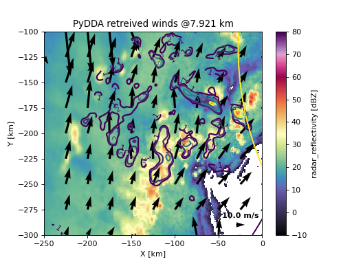

Visualizing the wind retrieval#
PyDDA’s pydda.vis module provides routines for plotting horizontal and
vertical cross-sections of retrieved wind fields overlaid on a gridded radar
background field (e.g., reflectivity). Three wind-vector styles are supported:
Quivers — arrow length proportional to wind speed.
Barbs — meteorological wind barbs.
Streamlines — continuous flow lines.
Each style has three geometry variants:
Function |
Cross-section |
|---|---|
Horizontal (constant altitude) |
|
Vertical, east–west (constant y) |
|
Vertical, north–south (constant x) |
|
Horizontal (constant altitude) |
|
Vertical, east–west (constant y) |
|
Vertical, north–south (constant x) |
|
|
Horizontal (constant altitude) |
Horizontal cross-section (quiver)#
The most common visualization is a horizontal cross-section of horizontal winds overlaid on reflectivity. The example below plots the wind field at vertical level 15, with updraft contours at 1, 2, 5, and 10 m/s and quivers spaced 25 km apart.
pydda.vis.plot_horiz_xsection_quiver(
grids_out,
level=15,
cmap="ChaseSpectral",
vmin=-10,
vmax=80,
quiverkey_len=10.0,
background_field="DBZ",
bg_grid_no=1,
w_vel_contours=[1, 2, 5, 10],
quiver_spacing_x_km=25.0,
quiver_spacing_y_km=25.0,
quiverkey_loc="bottom_right",
)
(Source code, png, hires.png, pdf)
{kind=link}
{kind=link}

Key parameters#
levelThe index of the vertical level (z dimension) to plot for horizontal cross-sections.
background_fieldThe name of the gridded variable to show as the color-filled background (e.g.,
"DBZ"for reflectivity).bg_grid_noWhich grid in the input list to use for the background field. Defaults to 0.
w_vel_contoursList of vertical velocity values (m/s) at which to draw contours. Set to
Noneto suppress vertical velocity contours.quiver_spacing_x_km/quiver_spacing_y_kmHorizontal spacing between quiver arrows in kilometers. Larger values produce a less cluttered plot.
quiverkey_lenThe reference wind speed (m/s) represented by the quiver key arrow.
For full parameter descriptions see the Developer Reference Manual reference guide.